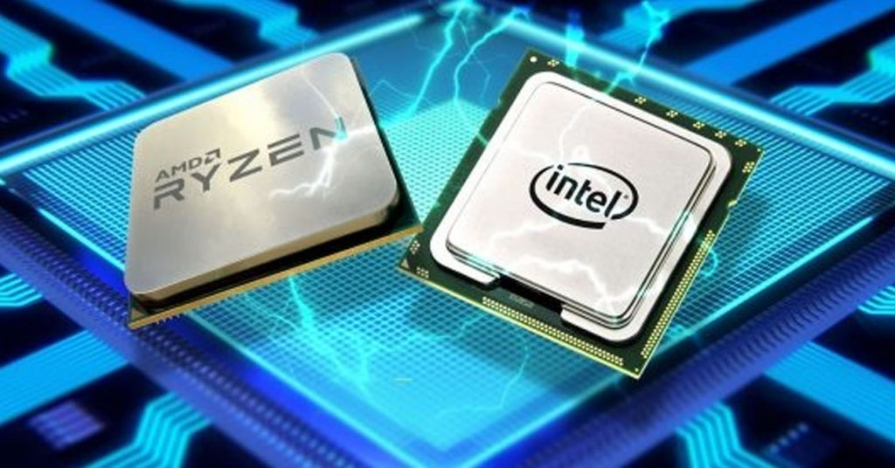

Características
Las características más importantes a considerar al escoger
un CPU en una aplicación, son:
Modelo del programador (Conjunto de registros que el
programador puede utilizar), forman el modelo mental del
CPU que el programador utiliza al programar en
ensamblador.
Conjunto de instrucciones que puede ejecutar el CPU.
Los modos de direccionamiento que pueden usarse para
obtener los operandos de las instrucciones.
Ciclo de instrucción (el conjunto de pasos que realiza el CPU
para procesar cada instrucción)
Buses de interconexión, usados para que el CPU lea y
escriba a la memoria.
Dispositivos de entrada y salida
Como podemos clasificarlos:
No hace mucho tiempo, el procesador era algo totalmente
desconocido por los usuarios de PCs.
Esto fue cambiando con el tiempo y en la actualidad
cualquier persona al comprar un equipo se pregunta acerca
de los atributos elementales de este dispositivo.
Es que el procesador es una parte esencial de la
computadora, por eso generalmente se la conoce como su
“cerebro”.
Para la selección de los procesadores a utilizar en los equipos
necesitamos ver las acciones tales como:
Integrar un nuevo sistema de cómputo
Actualizar un sistema de cómputo
Comprar equipo de cómputo nuevo
Construir un equipo de control – Microcontrolador
En el caso de los CPU ́s de Intel ,las características y los
beneficios de las tecnologías Intel® dependen de la
configuración del sistema y podrían requerir hardware y
software habilitados o la activación de servicios.
El desempeño varía según la configuración del sistema.
Ningún sistema informático puede ser absolutamente seguro.
Procesadores Intel®
Lo primero a definir es qué necesidades se tienen.
Si la movilidad o la falta de espacio son elementos claves a
considerar se optará por una computadora portátil, o laptop.
Intel ofrece para estos dispositivos diferentes familias de
procesadores según los requerimientos de cada usuario.
Los procesadores para portátiles calificados con 5 estrellas
satisfacen la máxima exigencia móvil.
Si eres un gamer necesitas un equipo muy potente, los
procesadores que permiten ejecutar varias aplicaciones
simultáneamente, con la posibilidad de vivir los juegos con
mucho realismo y excelente performance gráfica.
